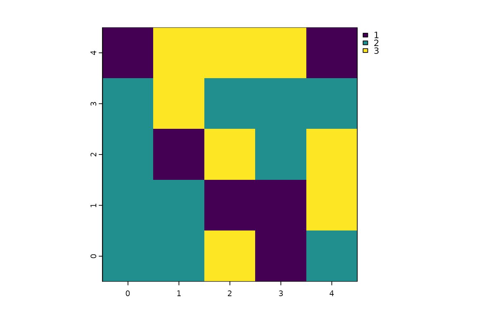
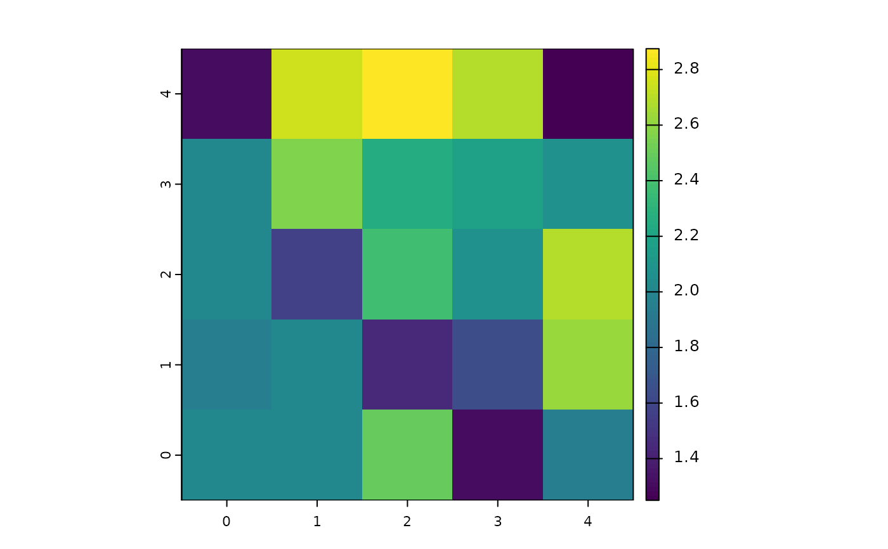

Each patch gives an equal share of a portion of its value to its neighbor patches.
diffuse(world, pVar, share, nNeighbors, torus = FALSE)
# S4 method for class 'worldMatrix,missing,numeric,numeric'
diffuse(world, share, nNeighbors, torus)
# S4 method for class 'worldArray,character,numeric,numeric'
diffuse(world, pVar, share, nNeighbors, torus = FALSE)WorldMatrix or worldArray object.
Character. If the world is a worldArray object, pVar
is the name of the layer to use to define the patches values.
pVar must not be provided if the world is a worldMatrix object.
Numeric. Value between 0 and 1 representing the portion of
the patches values to be diffused among the neighbors.
Integer: 4 or 8. Represents the number of neighbor patches
considered.
Logical to determine if the world is wrapped. Default is
torus = FALSE.
WorldMatrix or worldArray object with patches values updated.
What is given is lost for the patches.
If `torus = TRUE`, all `patches` have `nNeighbors` `patches` around
them, which
some may be on the other sides of the `world`. If `torus = FALSE`,
`patches` located on the edges of the `world` have less than
`nNeighbors` `patches` around them.
However, each neighbor still gets 1/4 or 1/8 of the shared amount
and the diffusing
patch keeps the leftover.Wilensky, U. 1999. NetLogo. http://ccl.northwestern.edu/netlogo/. Center for Connected Learning and Computer-Based Modeling, Northwestern University. Evanston, IL.
w1 <- createWorld(
minPxcor = 0, maxPxcor = 4, minPycor = 0, maxPycor = 4,
data = sample(1:3, size = 25, replace = TRUE)
)
plot(w1)

# Diffuse 50% of each patch value to its 8 neighbors
if (requireNamespace("SpaDES.tools", quietly = TRUE)) {
w2 <- diffuse(world = w1, share = 0.5, nNeighbors = 8)
plot(w2)
}
